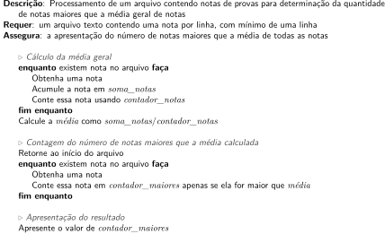

14 Arquivos texto
Todos os programas apresentados até o momento escrevem e leem texto, usando o terminal como interface: tela para a apresentação de informações e teclado para receber caracteres digitados.
Na escrita de um programa em C usando a função printf, a saída é sempre um texto. Este texto pode ser explícito e direto, como o do comando seguinte.
printf("Digite um valor: ");Por outro lado, o texto escrito pode ser o resultante de uma conversão do valor de uma variável, exemplificado na sequência.
double d = 1.32143211;
printf("v = %.2f\n", d); // 1.32Neste último printf, a variável d contém um dado valor representado internamente com o tipo double, mas a escrita é uma representação textual desse valor. De acordo com o formato %.2f, a transformação do valor para texto gera a sequência de caracteres 1, ., 3 e 2. A saída, portanto, é texto.
A questão uso de texto também ocorre nas leituras. Os programas recebem uma sequência de caracteres (texto) obtidas por fgets, mas um eventual valor numérico digitado deve ser convertido para um tipo int ou double, por exemplo. Assim, toda entrada para os programas também tem sido exclusivamente no formato textual. Segue um exemplo destacando a conversão.
char entrada[160]; // texto
fgets(entrada, sizeof entrada, stdin); // obtém texto
double d;
sscanf(entrada, "%lf", &d); // converte o texto digitado para double14.1 Fluxos de entrada e saída
Um programa em C recebe os caracteres digitados no terminal e produz suas saídas também na tela do terminal. A sequencia de caracteres digitados é denominada fluxo de entrada e o texto gerado é o fluxo de saída.
Esta seção abordada os fluxos usuais do programa e introduz novos fluxos, estes associados a arquivos.
14.1.1 Entrada e saída padrão
Durante a execução de um programa, ele é capaz de escrever e ler de um terminal. O sistema operacional automaticamente associa as leituras a um fluxo chamado de entrada padrão, conhecido por stdin (de standard input). A saída, por seu turno, é associada à chamada saída padrão, que é o fluxo stdout (standard output).
Ao executar um programa, stdout é associada ao terminal e, assim, todos as chamadas a printf produzem textos nesse terminal. De forma similar, stdin é também associada a esse terminal, de forma que as digitações realizadas são transferidas para o programa (daí o último argumento de fgets ser stdin).
Existe, ainda, um segundo fluxo de saída chamado stderr (standard error), que também é associado ao terminal e funciona praticamente da mesma forma que stdout.
Para concluir, o programa em execução pega dados de um fluxo de entrada e gera dados um fluxo de saída.
14.1.2 Texto plano e outros fluxos de entrada e saída
Nos fluxos de entrada e saída padrão, via de regra, são produzidos o que se convencionou chamar de texto plano (ou texto simples). Esse texto plano se refere apenas ao fluxo de caracteres convencionais, sem atributos associados. Em outras palavras, o nem fgets nem printf lidam com itálicos, negritos, espaçamento de linhas entre parágrafos ou linhas centralizadas, para citar alguns exemplos de formatação.
Quando um programa em C é escrito em um editor, ele é um texto plano. A maioria dos IDEs coloca cores e negritos para destacar palavras chaves e comentários, mas esse recurso é apenas visual e automático; essas características não são salvas junto como o código fonte. Textos planos são os produzidos em IDEs ou editores simples, como o GEdit ou o Notepad.
Programas em C são capazes de gerenciar outros fluxos além de stdin e stdout, os quais são manipulados como textos planos. Esses novos fluxos são usualmente associados a arquivos, o que permite que as leituras sejam feitas usando-se os caracteres armazenados em um arquivo e, adicionalmente, que as saídas produzam textos direcionados para outro arquivo.
O termo geral arquivo é usado para qualquer fluxo de dados de entrada ou saída de um programa. Estranhamente, stdin e stdout são tratados internamente também como arquivos.
A função de escrita printf escreve na saída padrão. Há uma outra função similar, a fprintf, esta última permitindo especificar o fluxo para o qual texto será enviado.
/*
*/
#include <stdio.h>
int main(void) {
// Duas saídas equivalente
printf("Hello, world!\n"); // implicitamente envia para stdout
fprintf(stdout, "Hello, world!\n"); // explícito para stdout
return 0;
}Hello, world!
Hello, world!A função fprintf possui um novo parâmetro obrigatório, que é o fluxo que será usado. Neste programa em particular, as duas instruções possuem o mesmo efeito, pois ambas as funções estão associadas a stdout.
14.2 Fluxo de escrita para arquivo
Para a criação de um novo fluxo existe uma função em stdio.h chamada fopen. Esta é uma função de chamada ao sistema operacional, solicitando o acesso a um determinado arquivo.
Para entender mais facilmente a criação de um novo fluxo dados, o programa seguinte parte do uso do fluxo convencional, ou seja, saída na tela. O programa lê uma sequência de coordenadas em \(\mathbb{R}^2\) e apresenta as coordenadas e sua distância à origem. Segue o programa com entradas e saídas convencionais.
/*
Criação de um novo arquivo contendo dados digitados pelo usuário
Requer: uma sequência de pares de pontos (x, y), usando o ponto (0, 0) como
valor sentinela
Ensure: a apresentação de cada ponto e de sua distância à origem
*/
#include <stdio.h>
#include <math.h>
int main(void) {
char entrada[160];
printf("Digite x e y do ponto (ou 0 0 para terminar): ");
fgets(entrada, sizeof entrada, stdin);
double x, y;
sscanf(entrada, "%lf%lf", &x, &y);
while (x != 0 || y != 0) {
// Cálculo da distância à origem
double distancia_origem = sqrt(x * x + y * y);
// Escrita das informações no arquivo
fprintf(stdout, "(%.1f, %.1f) --> %.1f\n", x, y, distancia_origem);
// Próximo (x, y)
printf("Digite x e y do ponto (ou 0 0 para terminar): ");
fgets(entrada, sizeof entrada, stdin);
sscanf(entrada, "%lf%lf", &x, &y);
}
return 0;
}Digite x e y do ponto (ou 0 0 para terminar): 3 -2
(3.0, -2.0) --> 3.6
Digite x e y do ponto (ou 0 0 para terminar): 1 -2
(1.0, -2.0) --> 2.2
Digite x e y do ponto (ou 0 0 para terminar): 10 5
(10.0, 5.0) --> 11.2
Digite x e y do ponto (ou 0 0 para terminar): 14.2 -14.2
(14.2, -14.2) --> 20.1
Digite x e y do ponto (ou 0 0 para terminar): 0 0Um ponto a se notar nesse programa é o uso da função fprintf para realizar a escrita, mesmo quando o printf poderia ser usado. Esse uso é proposital para identificar as alterações para mudar o fluxo para um arquivo.
A nova versão do programa é apresentada na sequência, sendo que a saída produzida pelo programa é gravada em um arquivo chamado distancias.txt.
/*
Criação de um novo arquivo contendo dados digitados pelo usuário
Requer: Uma sequência de pares de pontos (x, y), usando o ponto (0, 0) como
valor sentinela
Ensure: um arquivo texto contendo, linha a linha, as coordenadas do ponto e
suas distâncias à origem
*/
#include <stdio.h>
#include <math.h>
int main(void) {
char entrada[160];
// Criação do arquivo de saída
FILE *arquivo_destino = fopen("distancias.txt", "w");
if (arquivo_destino == NULL)
printf("Erro ao criar novo arquivo.\n");
else {
printf("Digite x e y do ponto (ou 0 0 para terminar): ");
fgets(entrada, sizeof entrada, stdin);
double x, y;
sscanf(entrada, "%lf%lf", &x, &y);
while (x != 0 || y != 0) {
// Cálculo da distância à origem
double distancia_origem = sqrt(x * x + y * y);
// Escrita das informações no arquivo
fprintf(arquivo_destino, "(%.1f, %.1f) --> %.1f\n", x, y, distancia_origem);
// Próximo (x, y)
printf("Digite x e y do ponto (ou 0 0 para terminar): ");
fgets(entrada, sizeof entrada, stdin);
sscanf(entrada, "%lf%lf", &x, &y);
}
// Encerramento do acesso ao arquivo
fclose(arquivo_destino);
}
return 0;
}Digite x e y do ponto (ou 0 0 para terminar): 3 -2
Digite x e y do ponto (ou 0 0 para terminar): 1 -2
Digite x e y do ponto (ou 0 0 para terminar): 10 5
Digite x e y do ponto (ou 0 0 para terminar): 14.2 -14.2
Digite x e y do ponto (ou 0 0 para terminar): 0 0A primeira diferença entre essa versão e a original é especificação de um arquivo, ou seja, um novo fluxo de dados. Essa especificação é feita usando-se uma variável arquivo_destino cujo tipo é FILE *. A essa variável é atribuído o valor retornado pela função fopen.
FILE *arquivo_destino = fopen("distancias.txt", "w");Conforme apresentada no programa, essa função solicita ao sistema operacional para criar um novo arquivo, o qual usará o nome distancias.txt. Essa função não é infalível e o sistema operacional pode, assim, negar a criação. Entre as razões para a criação falhar podem ser citadas, a título de exemplo, que o programa tenha autorização de criar um arquivo no diretório corrente ou que já exista um arquivo com esse nome e ele seja protegido para não ser reescrito. No caso de falha, a função retorno o valor NULL. O segundo parâmetro, "w", indica que o arquivo deve ser criado.
Assim, essa possibilidade de falha é tratada no programa, que verifica se o valor retornado foi ou não NULL.
if (arquivo_destino == NULL)
printf("Erro ao criar novo arquivo.\n"); // aqui houve erro
else {
// Aqui o arquivo foi criado com sucesso
...
}A relação entre o arquivo real (armazenado em um disco rígido, por exemplo) e o programa em C se dá por meio do valor retornado pela função fopen e armazenado na variável arquivo_destino. O programa usa essa variável para indicar o que é feito e o sistema operacional se encarrega de refletir os efeitos dos comandos no arquivo real.
O arquivo real é chamado usualmente de arquivo físico, enquanto a variável associada a esse arquivo é conhecida como arquivo lógico.
Se o arquivo de saída foi criado com sucesso, o programa segue para o else, cujos comandos reproduzem as mesmas leituras do programa original, incluindo as mesmas verificações e conversões. Nessa parte, a primeira diferença está no comando fprintf, cujo primeiro argumento é arquivo_destino.
fprintf(arquivo_destino, "(%.1f, %.1f) --> %.1f\n", x, y, distancia_origem);O texto que seria escrito no terminal é, agora, gravado no arquivo distancias.txt, incluindo as formatações (%.f) e mudanças de linha (\n).
Dessa forma, o arquivo de saída fica com o conteúdo apresentado na sequência.
(3.0, -2.0) --> 3.6
(1.0, -2.0) --> 2.2
(10.0, 5.0) --> 11.2
(14.2, -14.2) --> 20.1Há, finalmente, ainda uma diferença importante: depois de encerrada a sequência de entrada, o arquivo é fechado com fclose.
fclose(arquivo_destino);Fechar um arquivo faz com que o sistema operacional grave todos os bytes enviados para o arquivo, atualize suas informações de armazenamento (tamanho, data de gravação etc.) e libere os recursos que o sistema estava usando para controlar o acesso ao arquivo.
É importante notar que o arquivo somente é fechado caso tenha sido aberto com sucesso. É por essa razão que o fclose está no bloco de comandos condicionados no else.
Em geral, quando um programa tem sua execução terminada, os arquivos abertos por ele são automaticamente fechados.
Entretanto, é uma péssima prática não deixar o fechamento dos arquivos explicitamente indicados no código. O uso do fclose, portanto, é mandatório para um código de boa qualidade.
14.3 Fluxo de leitura
Da mesma forma que a saída textual de um programa pode ser direcionada a um arquivo, criando um fluxo de escrita, também a entrada pode ser feita de um arquivo, criando-se um fluxo de entrada.
Para exemplificar um fluxo de entrada, será considerado um arquivo textual contendo dados sobre triângulos e retângulos. O arquivo conterá, em sua primeira linha, um valor com a quantidade de figuras contidas no arquivo. Para os triângulos há uma linha contendo o caractere T e seis valores reais, cada par deles correspondendo às coordenadas \((x, y)\) dos vértices do triângulo; para os retângulos, o caractere será R e há apenas dois pontos (quatro valores) para referenciá-lo, correspondendo a dois vértices opostos (os lados do retângulo são sempre considerados paralelos aos eixos).
Para um exemplo inicial, pode ser considerado o arquivo seguinte, cujo nome é figuras.txt. Esse arquivo pode ser criado com qualquer editor de texto plano.
3
R 0.0 0.0 5.5 2.0
T -1.0 1.0 3.0 4.5 4 -0.5
R -1.2 5.2 2.2 3.1Neste exemplo, o 3 indica que há três formas. A primeira é o retângulo \(R_1\) da Figura 14.1; segue-se o triângulo \(T\) e a última é o retângulo \(R_2\).
Uma solução para processar os dados desse arquivo e apresentar as áreas de cada figura é o Algoritmo 14.1, apresentado com nível alto de abstração.
Algoritmo 14.1: Processamento de formas em arquivo com apresentação das suas áreas, com prefixação do número de formas.
A implementação desse algoritmo em C pode ser feita conforme o programa seguinte. Nessa codificação, o arquivo lógico é dado pela variável arquivo_formas, associado ao arquivo físico figuras.txt.
/*
Processamento de um arquivo de formas (triângulos e retângulos) para cálculo
das áreas
Requer: arquivo texto com nome 'figuras.txt':
na linha 1: número de formas
nas linhas restantes, conforme a quantidade da linha 1:
- OU a letra T mais coordenadas dos vértices do triângulo
- OU a letra R e as coordenadas de dois vértices opostos do
retângulo
Assegura: a apresentação da área de cada forma
*/
#include <stdio.h>
#include <math.h>
int main(void) {
FILE *arquivo_formas = fopen("figuras.txt", "r");
if (arquivo_formas == NULL) {
printf("Falha ao abrir arquivo de formas.\n");
}
else {
char entrada[160];
fgets(entrada, sizeof entrada, arquivo_formas);
int numero_formas;
sscanf(entrada, "%d", &numero_formas);
// Processamento das formas
for (int i = 0; i < numero_formas; i++) {
// Obtenção da linha com a forma
fgets(entrada, sizeof entrada, arquivo_formas);
double area;
if (entrada[0] == 'T') {
// Triângulo: área por semiperímetro
double x1, y1, x2, y2, x3, y3;
sscanf(entrada, "%*c%lf%lf%lf%lf%lf%lf",
&x1, &y1, &x2, &y2, &x3, &y3);
double lado1 = sqrt(pow(x1 - x2, 2) + pow(y1 - y2, 2));
double lado2 = sqrt(pow(x1 - x3, 2) + pow(y1 - y3, 2));
double lado3 = sqrt(pow(x2 - x3, 2) + pow(y2 - y3, 2));
double semiperimetro = (lado1 + lado2 + lado3) / 2;
area = sqrt(semiperimetro * (semiperimetro - lado1) *
(semiperimetro - lado2) * (semiperimetro - lado3));
}
else {
// Retângulo: ára por base x altura
double x1, y1, x2, y2;
sscanf(entrada, "%*c%lf%lf%lf%lf", &x1, &y1, &x2, &y2);
area = fabs(x2 - x1) * fabs(y2 - y1);
}
printf("%.2f\n", area);
}
fclose(arquivo_formas);
}
return 0;
}11.00
11.75
7.14A função fopen usa como parâmetros o nome do arquivo de formas e o modo "r", que indica acesso para leitura. Todas as leituras são feitas linha a linha, usando a variável genérica entrada para armazenamento temporário. Para o caso da primeira linha, a qual contém apenas a quantidade de formas do arquivo, esse valor é obtido pelo sscanf usando-se o formato %d.
No caso das linhas de cada forma, cada uma delas é armazenada em entrada, porém analisadas de forma diferente. Como o primeiro caractere da linha indica sua forma, a decisão entre triângulo e retângulo é feita com base em entrada[0], que será T ou R.
Com base no tipo da forma, a linha é analisada de forma separada. No caso do triângulo, são esperados seis valores que formam as três coordenadas dos vértices e, desse modo, o sscanf usa o padrão de formato %*c%lf%lf%lf%lf, que ignora o primeiro caractere e faz a varredura procurando seis valores reais. Para o caso do retângulo, no qual há apenas dois pontos, o padrão usado é %*c%lf%lf%lf%lf, o qual ignora o R e obtém os quatro valores que formam as duas coordenadas dos vértices opostos.
Naturalmente, terminado o processamento do arquivo, fclose é usado para liberar o sistema operacional de gerenciar o arquivo de dados.
14.4 Mais sobre a abertura e o fechamento de arquivos texto
Nesta seção são reapresentadas as funções de manipulação de arquivos com mais detalhamento sobre seu funcionamento e uso dos parâmetros.
14.4.1 A função fopen
A função de associação entre o programa e o arquivo real é a fopen. Ela sempre possui dois parâmetros, sendo o primeiro a indicação do nome do arquivo e o segundo, o modo de abertura.
O nome do arquivo é uma cadeia de caracteres que pode ser somente o nome do arquivo, como "figuras.txt", por exemplo. Nesse caso, o arquivo físico é considerado em relação ao diretório corrente. O nome pode indicar também o caminho: "../figuras.txt" indica o arquivo no diretório pai (isto é, um acima do atual) e "/home/user/dados/figuras.txt" dá o caminho absoluto e independe do diretório corrente1.
Em relação aos modos, como "w" ou "r" usados nos exemplos, a Tabela 14.1 sumariza como funcionam.
fopen para manipulação de arquivos texto.
| Modo | Significado |
|---|---|
"w" |
Prepara um arquivo somente para escrita, criando um arquivo novo ou truncando o existente para tamanho zero. A posição corrente é ajustada para o início do arquivo. |
"r" |
Prepara um arquivo somente para leitura. A posição corrente é ajustada para o início do arquivo. |
"a" |
Prepara um arquivo somente para escrita. Se o arquivo já existir, a posição corrente é ajustada para o final do arquivo; senão, um novo arquivo é criado. |
Arquivos texto são, via de regra, processados sequencialmente, do início ao fim ou do início até um ponto de interesse qualquer. Raramente são abertos para leitura e escrita, de forma que essa opção foi omitida da lista apresentada.
A Tabela 14.1 também introduz um elemento importante, embora intuitivamente fácil de compreender: a posição corrente. Esse termo é aplicado ao local no arquivo onde as operações de leitura e escrita serão realizadas. Por exemplo, quando um arquivo é aberto em modo "r", a posição corrente está no início do arquivo, que é o byte zero. A cada leitura, a posição corrente é ajustada para o próximo byte que será lido.
Embora a posição corrente não seja diretamente usada pelo programador no processamento sequencial do arquivo, um exemplo simples de programa ilustra esse conceito.
/*
Escrita de algumas linhas de texto em um arquivo com acompanhamento da
posição corrente de Escrita
Assegura: criação de arquivo 'texto.txt' com algum texto e apresentação
dos bytes usados em cada linha durante a escrita
*/
#include <stdio.h>
int main(void) {
FILE *arquivo_numeros = fopen("texto.txt", "w");
if (arquivo_numeros == NULL)
printf("Falha ao criar arquivo de saída.\n");
else {
printf("Primeira linha: bytes de %ld", ftell(arquivo_numeros));
fprintf(arquivo_numeros, "Primeira linha deste arquivo.\n");
printf(" a %ld.\n", ftell(arquivo_numeros) - 1);
printf("Segunda linha: bytes de %ld", ftell(arquivo_numeros));
fprintf(arquivo_numeros, "Linha 2"); // escrita em duas etapas
fprintf(arquivo_numeros, " segue aqui...\n");
printf(" a %ld.\n", ftell(arquivo_numeros) - 1);
printf("Terceira linha: bytes de %ld", ftell(arquivo_numeros));
fprintf(arquivo_numeros, "Finalmente o fim do texto! (linha 3)");
printf(" a %ld.\n", ftell(arquivo_numeros) - 1);
fclose(arquivo_numeros);
}
return 0;
}Primeira linha: bytes de 0 a 29.
Segunda linha: bytes de 30 a 51.
Terceira linha: bytes de 52 a 87.O conteúdo de texto.txt ficou como se segue.
Primeira linha deste arquivo.
Linha 2 segue aqui...
Finalmente o fim do texto! (linha 3)Para visualização, a seguir é apresentado o conteúdo do arquivo com 16 bytes por linha. A primeira coluna é a contagem de caracteres (primeira linha do od são os bytes de zero a 15), o que ajuda a identificar a posição de cada caractere relativo a sua posição do arquivo. Os valores \n são as mudanças de linha usuais2. Vale a pena confrontar os valores escritos pelo programa anterior com as posições reais do arquivo.
$ od -Ad -tc texto.txt
0000000 P r i m e i r a l i n h a d
0000016 e s t e a r q u i v o . \n L i
0000032 n h a 2 s e g u e a q u i
0000048 . . . \n F i n a l m e n t e o
0000064 f i m d o t e x t o ! (
0000080 l i n h a 3 )
0000088O conceito da posição corrente também é válido para as leituras, que se iniciam na posição zero (início do arquivo) e, após cada leitura, é atualizada para o próximo byte que será lido em um próximo fgets.
A ideia da posição em que ocorre a próxima operação de entrada ou saída é a usada quando o modo "a" é usado no fopen. Nesse caso, o arquivo é aberto para escrita, seu conteúdo (se existir) é preservado e a posição corrente é colocada depois do último byte do arquivo. Com isso, uma nova escrita no arquivo acrescentará texto ao seu final.
Um log é um arquivo usado para registrar eventos. Por exemplo, sempre que um usuário entra no sistema ou quando um trabalho de impressão é iniciado, cada evento é registrado no log. O programa seguinte, cada vez que executado, solicita uma linha de informação e a grava em um arquivo de log.
/*
Inserção de uma linha no arquivo de log 'registro.log'
Requer: a digitação da linha de informação
Assegura: o acréscimo dessa linha no final do arquivo
*/
#include <stdio.h>
int main(void) {
FILE *arquivo_log = fopen("registro.log", "a");
if (arquivo_log == NULL)
printf("Falha ao criar ou abrir arquivo de log.\n");
else {
printf("Digite a informação a ser registrada:\n> ");
char linha_de_log[160];
fgets(linha_de_log, sizeof linha_de_log, stdin);
fprintf(arquivo_log, "%s", linha_de_log);
fclose(arquivo_log);
}
return 0;
}Digite a informação a ser registrada:
> Primeiro registro do log.Na primeira execução, o arquivo registro.log ainda não existe, o que faz com que ele seja criado vazio. Então o programa solicita o primeiro registro e o grava no arquivo.
A cada nova execução, uma linha é solicitada e adicionada ao final do arquivo.
Quando um arquivo é aberto apenas para escrita ("w" e "a"), tentativas de leitura desse arquivo são apenas ignoradas sem gerar qualquer erro. De forma similar, ao se tentar escrever em um arquivo aberto com "r", a escrita não é feita e nenhum erro é indicado.
14.4.2 A função fclose
O encerramento do acesso ao arquivo é feito pela função fclose, para a qual é preciso passar como parâmetro a variável correspondente a um arquivo aberto com sucesso. Uma vez fechado, nenhuma operação de entrada ou saída para o arquivo é possível.
14.5 A função fprintf
A escrita em um arquivo texto com o fprint funciona de forma similar ao print na tela. A função, inicialmente, processa a cadeia de caracteres de formato e faz as conversões de formato, gerando o texto final. Então, esse texto é gravado no arquivo. Enquanto print é sempre direcionado para stdout, fprintf permite escolher a qual fluxo de saída o texto será enviado.
Como exemplo, pode ser considerado o programa seguinte, que cria um arquivo com algumas operações com raiz quadrada.
/*
Criação de arquivo com valores de raízes quadradas
Assegura: criação de arquivo texto contendo valores de raízes
*/
#include <stdio.h>
#include <math.h>
int main(void) {
FILE *arquivo_raizes = fopen("raizes.txt", "w");
if (arquivo_raizes == NULL)
printf("Falha ao criar arquivo.\n");
else {
for (double x = 0.0; x <= 100; x += 0.5)
fprintf(arquivo_raizes, "raiz(%.1f) = %.3f\n", x, sqrt(x));
fclose(arquivo_raizes);
}
return 0;
}O arquivo resultante da execução, raizes.txt, segue.
raiz(0.0) = 0.000
raiz(0.5) = 0.707
raiz(1.0) = 1.000
raiz(1.5) = 1.225
raiz(2.0) = 1.414
... [191 linhas omitidas]
raiz(98.0) = 9.899
raiz(98.5) = 9.925
raiz(99.0) = 9.950
raiz(99.5) = 9.975
raiz(100.0) = 10.000Executada uma chamada de fprint, a escrita é feita a partir da posição corrente, a qual é atualizada para o próximo byte depois do último byte escrito.
14.6 Leitura até o fim do arquivo
Quando um arquivo contém dados, além da estratégia de prefixar os dados com a quantidade (estratégia usada no Algoritmo 14.1), é também possível varrer o arquivo até encontrar seu final. O Algoritmo 14.2 aborda esse novo problema, ainda no contexto de um arquivo com formas triangulares e retangulares.
Algoritmo 14.2: Processamento de formas em arquivo com apresentação das suas áreas, com uma forma por linha.
A função fgets opera da mesma forma para um arquivo aberto quanto para stdin, ou seja, os dados do arquivo são lidos para uma variável do programa até que seja encontrado um final de linha (\n). O efeito prático é a leitura de uma linha por vez.
Quando não há mais dados no arquivo para serem lidos, situação em que o fim do arquivo foi atingido, o valor de retorno de fgets é NULL. Assim, pela verificação do valor de retorno, é possível verificar se se chegou ao fim dos dados.
O programa em C seguinte implementa do Algoritmo 14.2, verificando se ainda há formas do arquivo analisando o valor de retorno de fgets.
/*
Processamento de um arquivo de formas (triângulos e retângulos) para cálculo
das áreas
Requer: arquivo texto com nome 'figuras.txt' com cada linha contendo:
- OU a letra T mais coordenadas dos vértices do triângulo
- OU a letra R e as coordenadas de dois vértices opostos do
retângulo
Assegura: a apresentação da área de cada forma
*/
#include <stdio.h>
#include <math.h>
int main(void) {
FILE *arquivo_formas = fopen("figuras.txt", "r");
if (arquivo_formas == NULL) {
printf("Falha ao abrir arquivo de formas.\n");
}
else {
char forma[160];
// Obtenção do número de formas
while (fgets(forma, sizeof forma, arquivo_formas) != NULL) {
double area;
if (forma[0] == 'T') {
// Triângulo: área por semiperímetro
double x1, y1, x2, y2, x3, y3;
sscanf(forma, "%*c%lf%lf%lf%lf%lf%lf",
&x1, &y1, &x2, &y2, &x3, &y3);
double lado1 = sqrt(pow(x1 - x2, 2) + pow(y1 - y2, 2));
double lado2 = sqrt(pow(x1 - x3, 2) + pow(y1 - y3, 2));
double lado3 = sqrt(pow(x2 - x3, 2) + pow(y2 - y3, 2));
double semiperimetro = (lado1 + lado2 + lado3) / 2;
area = sqrt(semiperimetro * (semiperimetro - lado1) *
(semiperimetro - lado2) * (semiperimetro - lado3));
}
else {
// Retângulo: ára por base x altura
double x1, y1, x2, y2;
sscanf(forma, "%*c%lf%lf%lf%lf", &x1, &y1, &x2, &y2);
area = fabs(x2 - x1) * fabs(y2 - y1);
}
printf("%.2f\n", area);
}
fclose(arquivo_formas);
}
return 0;
}11.00
11.75
7.14
1.00
4.00
0.50O arquivo figuras.txt processado por esse programa contém o conteúdo seguinte. Comparativamente ao usado na Seção 14.3, o formado de descrição de cada forma é o mesmo, sendo que apenas a primeira linha contendo o número de formas não existe.
R 0.0 0.0 5.5 2.0
T -1.0 1.0 3.0 4.5 4 -0.5
R -1.2 5.2 2.2 3.1
R 0 0 1 1
R -1 -1 1 1
T 0 0 0 1 1 0Durante a execução, o resultado de fgets é checado a cada início do while, até que retorne NULL e encerre a repetição. A cada retorno válido, a área correspondente é calculada.
14.7 A função rewind
A palavra rewind tem aqui o sentido de rebobinar e vem do tempo em que os arquivos eram mantidos em fitas magnéticas e, para voltar para o início do arquivo, era necessário retroceder fisicamente o carretel. Para o contexto atual, rebobinar significa apenas retornar a posição corrente para o byte zero, ou seja, o primeiro byte do arquivo.
A função rewind tem o significado de retornar o arquivo para a primeira posição. Isso significa, por exemplo, que se um arquivo tem que ser processado mais que uma vez, é possível fazer uma varredura até o final e, então, retornar ao início e fazer nova leitura.
Um uso interessante de rewind é apresentado no Algoritmo 14.3.
Algoritmo 14.3: Processamento de arquivo de notas.

Esse problema requer duas passadas pelos valores das notas, uma vez que a contagem dos valores maiores que a média precisa que a média já tenha sido calculada e, para calcular a média, é preciso ter passado por todos as notas. Assim, o arquivo é varrido sequencialmente somando-se as notas e contando quantas são para, em seguida, calcular a média. Em um segundo passo, o arquivo é varrido novamente desde o início, para, então, contar a quantidade de notas maiores que a média.
Como arquivo de notas, segue uma possível versão de notas.txt.
5.4
3.4
5.6
9.8
5.0
3.8
4.4
4.9
2.5
4.8
4.9A implementação em C para o processamento do arquivo é apresentada na sequência.
/*
Determinação da quantidade de notas maiores que a média geral das notas
em um arquivo de dados
Requer: arquivo texto com uma nota por linha
Assegura: a apresentação da quantidade notas maiores que a média geral
*/
#include <stdio.h>
int main(void) {
FILE *arquivo_notas = fopen("notas.txt", "r");
if (arquivo_notas == NULL) {
printf("Falha ao abrir arquivo de notas.\n");
}
else {
// Cálculo da média geral das notas
char entrada[160];
double soma_notas = 0;
int contador_notas = 0;
while (fgets(entrada, sizeof entrada, arquivo_notas) != NULL) {
double nota;
sscanf(entrada, "%lf", ¬a);
soma_notas += nota;
contador_notas++;
}
double media = soma_notas / contador_notas;
// Contagem da quantidade de notas acima da média calculada
rewind(arquivo_notas); // retorna ao início do arquivo
int contador_maiores = 0;
while (fgets(entrada, sizeof entrada, arquivo_notas) != NULL) {
double nota;
sscanf(entrada, "%lf", ¬a);
if (nota > media)
contador_maiores++;
}
fclose(arquivo_notas);
// Resultado
printf("%d notas maiores que %.1f.\n", contador_maiores, media);
}
return 0;
}4 notas maiores que 5.0.Sem o uso de rewind, o segundo while terminaria de imediato, visto que a posição corrente já está no fim do arquivo e qualquer nova leitura retornará NULL como resultado.
14.8 A traiçoeira função feof
O nome “feof” é composto pelo f inicial, como (quase) todas as funções que trabalham com arquivos (files), seguido de eof, que significa end of file, ou fim de arquivo.
Porém, o uso correto dessa função requer entender tanto o que ela faz e o que ela não faz. Apesar do nome, feof não verifica se o arquivo chegou ao fim. Isso é o que ela não faz.
A função feof deve ser usada depois que uma operação de leitura (fgets, por exemplo) tenta ser executada mas falha. Somente depois dessa falha é que feof pode ser usada para verificar porquê a função não foi bem sucedida. Assim, feof volta verdadeiro quando a razão da falha foi tentar ler além do último dado do arquivo.
A diferença parece sutil, mas não é. Para entender esse mecanismo, um programa simples é usado para mostrar o que acontece na leitura de um arquivo texto e como feof se comporta.
O arquivo usado para exemplo possui apenas duas linhas e é apresentado a seguir.
Texto da primeira linha
E material para a segunda linha!Esse arquivo possui duas linhas, ambas terminadas com \n, como pode ser observado ao se analisar mais detalhadamente o conteúdo do arquivo.
$ od -tc -Ad texto.txt
0000000 T e x t o d a p r i m e i r
0000016 a l i n h a \n E m a t e r i
0000032 a l p a r a a s e g u n d
0000048 a l i n h a ! \n
0000057O programa usado para processar esse arquivo está apresentado na sequência.
/*
Programa exemplo do comportamento da função feof
Assegura: a apresentação de informações relevantes ao longo da execução
*/
#include <stdio.h>
int main(void) {
FILE *arquivo = fopen("texto.txt", "r");
if (arquivo == NULL)
printf("Falha ao abrir arquivo com texto.");
else {
char linha[160];
// Situação inicial
printf("Ao abrir o arquivo: feof = %c.\n\n", feof(arquivo) ? 'V' : 'F');
// Primeira leitura
fgets(linha, sizeof linha, arquivo);
printf("Primeira leitura: %s", linha);
printf("Depois da 1ª leitura: feof = %c.\n\n",
feof(arquivo) ? 'V' : 'F');
// Segunda leitura
fgets(linha, sizeof linha, arquivo);
printf("Segunda leitura: %s", linha);
printf("Depois da 2ª leitura: feof = %c.\n\n",
feof(arquivo) ? 'V' : 'F');
// Terceira leitura, que deve falhar
fgets(linha, sizeof linha, arquivo);
printf("Terceira leitura: %s", linha);
printf("Depois da 3ª leitura: feof = %c.\n\n",
feof(arquivo) ? 'V' : 'F');
fclose(arquivo);
}
return 0;
}Ao abrir o arquivo: feof = F.
Primeira leitura: Texto da primeira linha
Depois da 1ª leitura: feof = F.
Segunda leitura: E material para a segunda linha!
Depois da 2ª leitura: feof = F.
Terceira leitura: E material para a segunda linha!
Depois da 3ª leitura: feof = V.Como esperado, as duas primeiras execuções de fgets fazem as leituras das duas primeiras linhas do arquivo e apresentam seu conteúdo na tela. Como o arquivo texto.txt possui apenas essas duas linhas, a terceira chamada a fgets falha, sendo o NULL retornado ignorado no programa. Como a leitura falha, a variável linha não é modificada e é por essa razão que a mensagem de conteúdo da terceira leitura aparece igual ao da segunda.
Quanto à função feof, ela retorna falso (zero) logo ao abrir o arquivo e também depois da primeira leitura. Na segunda execução de fgets, a segunda linha é copiada para a variável linha e efetivamente a posição corrente está no fim do arquivo. Entretanto, como a leitura não foi além do fim do arquivo, feof ainda retorna falso. Na terceira leitura, que é mal sucedida por não haver mais o que ler do arquivo, o fgets não faz a leitura e, a partir desse momento, feof começa a retornar verdadeiro (valor não nulo), indicando que o problema foi tentar ler de um arquivo que já havia terminado.
Por uma tendência em interpretar erroneamente o que feof realmente verifica, não é incomum programas como o seguinte, que produz um resultado insatisfatório.
Supondo a existência de um arquvio inteiros.txt com o conteúdo seguinte, um programa se propõe a fazer a soma dos valores inteiros contidos nele. Para este arquivo específico, o resultado esperado é 120.
20
50
30
20Este arquivo possui um \n no final de cada linha. Como ilustra o comando seguinte.
$ od -tc -Ad inteiros.txt
0000000 2 0 \n 5 0 \n 3 0 \n 2 0 \n
0000012Segue, agora, o programa que tenta processar esse arquivo.
/*
Tentativa incorreta de somar os valores de um arquivo de inteiros
Requer: um arquivo com valores inteiros, um por linha
Assegura: a soma incorreta dos valores
*/
#include <stdio.h>
int main(void) {
FILE *arquivo_inteiros = fopen("inteiros.txt", "r");
if (arquivo_inteiros == NULL)
printf("Falha ao abrir arquivo_inteiros com os valores inteiros.");
else {
int soma = 0;
while (!feof(arquivo_inteiros)) {
// Obtenção do inteiro
char entrada[160];
fgets(entrada, sizeof entrada, arquivo_inteiros);
int valor;
sscanf(entrada, "%d", &valor);
// Acumulação do valor
soma += valor;
}
fclose(arquivo_inteiros);
printf("Soma dos valores no arquivo: %d.\n", soma);
}
return 0;
}Soma dos valores no arquivo: 140.O laço de repetição é baseado na verificação de feof. Porém, essa função ainda retorna verdadeiro depois da leitura da última linha, pois o fgets não tentou ler depois do fim do arquivo. A consequência disso é que o while faz uma repetição a mais e o último valor lido é somado mais uma vez.
Uma alternativa interessante é evitar o uso do feof, baseando as decisões no resultado da função de leitura. Segue, assim, uma versão robusta do programa para a soma dos valores do arquivo.
/*
Tentativa incorreta de somar os valores de um arquivo de inteiros
Requer: um arquivo com valores inteiros, um por linha
Assegura: a soma incorreta dos valores
*/
#include <stdio.h>
int main(void) {
FILE *arquivo_inteiros = fopen("inteiros.txt", "r");
if (arquivo_inteiros == NULL)
printf("Falha ao abrir arquivo_inteiros com os valores inteiros.");
else {
char entrada[160];
int soma = 0;
while (fgets(entrada, sizeof entrada, arquivo_inteiros) != NULL) {
int valor;
sscanf(entrada, "%d", &valor);
soma += valor;
}
fclose(arquivo_inteiros);
printf("Soma dos valores no arquivo: %d.\n", soma);
}
return 0;
}Soma dos valores no arquivo: 120.No Linux, usado como plataforma para este livro, o separador de diretórios é a barra
/. O mesmo ocorre para o MacOS. Em sistemas Windows, os caminhos usam a barra reversa\e, como essa barra tem significado especial em C, é preciso indicar o caminho com o escape\\:"..\\figuras.txt"ouC:\\User\\Documentos\\Dados\\figuras.txt.↩︎No Windows, a mudança de linha costuma ser indicada pela sequência
\r\n, de modo que o conteúdo do arquivo pode diferir um pouco caso seja essa a plataforma usada para execução do programa.↩︎